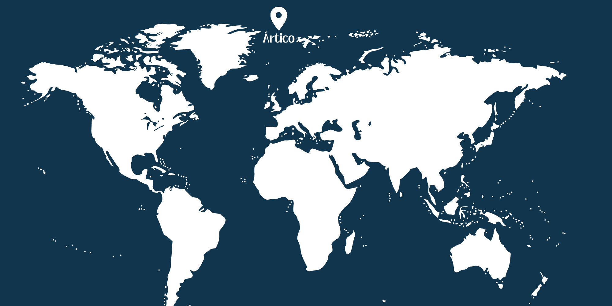
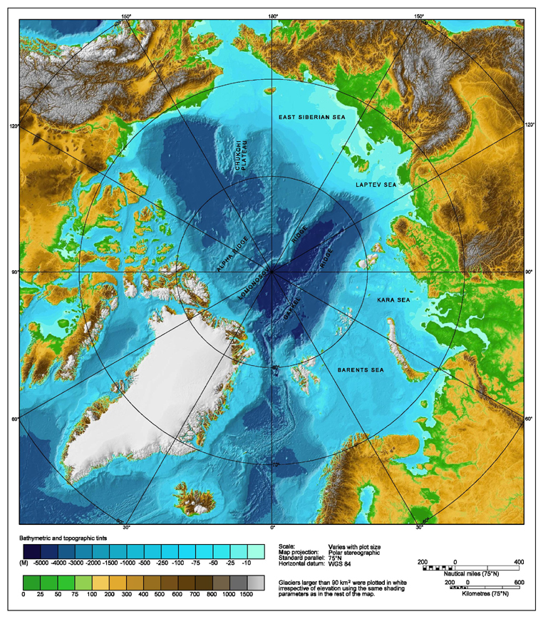
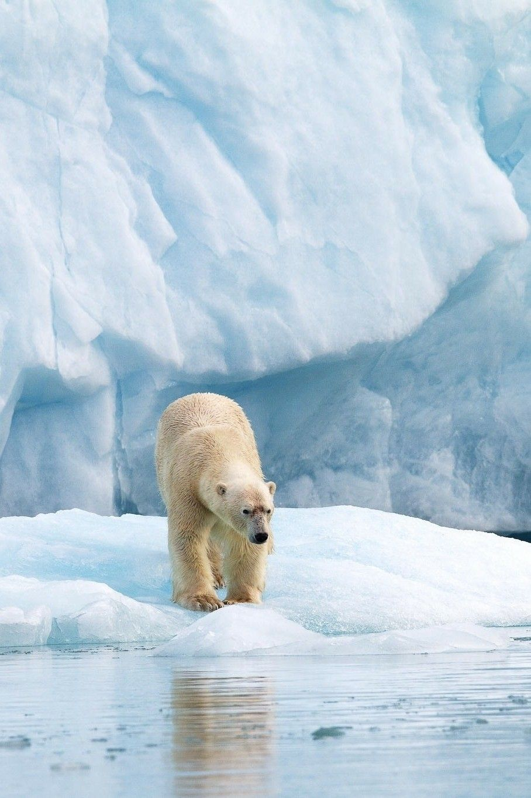

Introdução
O Oceano Ártico, localizado na região polar norte, é o menor e mais raso dos oceanos do mundo. Rodeado pela América do Norte, Europa e Ásia, desempenha um papel crucial na regulação do clima global e é fundamental para a biodiversidade marinha. Embora seja uma das regiões mais isoladas e inóspitas do planeta, o Oceano Ártico tem uma importância ecológica e climática imensa.
O Ártico é conhecido por suas condições extremas, com temperaturas que podem cair abaixo de -40 graus Celsius no inverno e uma paisagem dominada por gelo marinho. No entanto, o impacto das mudanças climáticas está transformando rapidamente essa região, com implicações significativas para o ambiente global. O derretimento do gelo marinho está abrindo novas rotas de navegação e possibilidades de exploração de recursos, mas também está ameaçando habitats críticos e espécies que dependem do gelo.
A região ártica também tem uma rica herança cultural, sendo o lar de diversas comunidades indígenas que têm vivido e se adaptado a essas condições extremas por milhares de anos. Essas comunidades dependem dos recursos marinhos e do gelo para a sua subsistência e estão entre as mais vulneráveis às mudanças ambientais que estão ocorrendo no Ártico.
- Menor e Mais Raso: O Oceano Ártico é o menor e mais raso dos oceanos, com uma profundidade média de cerca de 1.205 metros.
- O Ponto Mais Norte do Planeta: O Polo Norte, localizado no centro do Oceano Ártico, é o ponto mais ao norte da Terra.
- Efeitos de Albedo: O gelo marinho reflete a maior parte da radiação solar, ajudando a regular a temperatura global. Esse fenômeno, conhecido como albedo, é crucial para manter o Ártico frio.
- Polo Norte Magnético: O Polo Norte Magnético, diferente do Polo Norte geográfico, está em constante movimento devido às mudanças no núcleo da Terra.
- Expedições Pioneiras: As expedições pioneiras ao Ártico, como a de Fridtjof Nansen em 1893-1896, abriram caminho para a exploração e a compreensão científica desta região remota.
- Impacto nas Comunidades Indígenas: As mudanças climáticas estão afetando profundamente as comunidades indígenas que dependem do gelo marinho para caça e transporte, ameaçando suas tradições e modos de vida.

Localização e Extensão
Geografia
O Oceano Ártico cobre uma área de aproximadamente 14 milhões de quilômetros quadrados, tornando-o o menor dos cinco oceanos do mundo. Localizado no extremo norte da Terra, é cercado por as costas da América do Norte (Alasca e Canadá), da Groenlândia, da Rússia e da Noruega. O Polo Norte, o ponto mais setentrional do planeta, está situado no centro do Oceano Ártico. Este oceano é caracterizado por suas bacias profundas, como a Bacia Eurasiática e a Bacia Amerasiática, bem como por suas extensas plataformas continentais. As plataformas continentais ao largo das costas da Rússia e do Canadá são particularmente vastas, e muitas dessas áreas estão cobertas por gelo marinho durante grande parte do ano. A profundidade média do Oceano Ártico é relativamente rasa em comparação com outros oceanos, cerca de 1.205 metros.

Além das bacias e plataformas, o Oceano Ártico inclui importantes corpos d'água como o Mar de Chukchi, o Mar de Beaufort, o Mar de Barents e o Mar de Kara. Estes mares marginais são partes vitais do Ártico, com significativas populações de vida marinha e importantes rotas de navegação que estão se tornando cada vez mais acessíveis devido ao recuo do gelo marinho.
Características Geográficas
O Oceano Ártico é dominado por uma vasta extensão de gelo marinho que varia sazonalmente em espessura e extensão. Durante o inverno, o gelo pode cobrir até 14 milhões de quilômetros quadrados, enquanto no verão, essa extensão pode diminuir para cerca de 7 milhões de quilômetros quadrados devido ao derretimento sazonal. Esta variação no gelo marinho tem um impacto significativo sobre a vida marinha e os padrões climáticos regionais.
A topografia subaquática do Oceano Ártico é diversificada, incluindo cristas subaquáticas, bacias profundas e plataformas continentais. A Dorsal Mendeleev e a Dorsal de Lomonosov são duas cristas importantes que atravessam o fundo do oceano, separando diferentes bacias. Estas características geográficas influenciam a circulação das correntes oceânicas e a distribuição do gelo marinho. Além das formações geográficas, o Oceano Ártico também abriga polinias, que são áreas de águas abertas cercadas por gelo marinho. Estas polinias são ecossistemas importantes que fornecem habitats críticos para várias espécies marinhas e são essenciais para a troca de calor entre o oceano e a atmosfera. Elas são hotspots de biodiversidade, suportando uma variedade de vida marinha, incluindo aves, mamíferos marinhos e peixes.
Fenômenos Climáticos
Mudanças Climáticas
O Oceano Ártico está na linha de frente das mudanças climáticas globais, com o aquecimento da região ocorrendo a uma taxa duas vezes maior do que a média global. Este aquecimento acelerado está levando a uma diminuição significativa na extensão e espessura do gelo marinho. O derretimento do gelo não apenas afeta os ecossistemas locais, mas também tem implicações globais, como o aumento do nível do mar e a alteração dos padrões climáticos. A redução do gelo marinho no Ártico está criando um ciclo de feedback positivo conhecido como amplificação do Ártico. À medida que o gelo derrete, menos radiação solar é refletida de volta para o espaço (efeito albedo), e mais é absorvida pelo oceano, levando a um aquecimento adicional. Este processo não apenas acelera o derretimento do gelo, mas também aquece as águas do Ártico, exacerbando ainda mais as mudanças climáticas.

Além do derretimento do gelo, o permafrost (solo permanentemente congelado) nas regiões árticas está descongelando, liberando grandes quantidades de gases de efeito estufa, como metano e dióxido de carbono, na atmosfera. Este descongelamento pode intensificar ainda mais o aquecimento global e ter efeitos adversos sobre as infraestruturas e os ecossistemas locais.
Gelo Marinho
O gelo marinho é uma característica definidora do Oceano Ártico e desempenha um papel crucial na regulação do clima. Durante o inverno, o gelo marinho se expande, cobrindo vastas áreas do oceano, enquanto no verão, ele recua. No entanto, as mudanças climáticas estão causando uma redução drástica na extensão e na espessura do gelo, especialmente durante os meses de verão. O derretimento do gelo marinho tem várias consequências. Primeiramente, ele afeta a vida marinha que depende do gelo, como ursos polares, focas e morsas, que usam o gelo como plataforma para caça e descanso. Em segundo lugar, a redução do gelo marinho abre novas rotas de navegação, como a Passagem do Noroeste, que pode ter implicações econômicas e geopolíticas significativas.
O gelo marinho também influencia o clima global. O efeito albedo do gelo, que reflete a radiação solar, ajuda a manter o Ártico frio. À medida que o gelo diminui, mais radiação é absorvida pelo oceano, levando a um aquecimento adicional e acelerando o derretimento. Este ciclo de feedback é uma preocupação central nas discussões sobre o impacto das mudanças climáticas.
Padrões Climáticos
Os padrões climáticos no Ártico são complexos e influenciados por vários fatores, incluindo o vórtice polar e a oscilação do Atlântico Norte. O vórtice polar é uma grande área de baixa pressão e ar frio que circula sobre o Polo Norte. Quando este vórtice enfraquece, pode resultar em ondas de frio extremo que se estendem para latitudes mais baixas, afetando o clima na América do Norte e na Europa.
A oscilação do Atlântico Norte (NAO) é outra influência climática importante, afetando a força e a direção dos ventos de oeste no Atlântico Norte. A fase positiva da NAO é associada a invernos mais quentes e úmidos na Europa e América do Norte, enquanto a fase negativa traz invernos mais frios e secos. Essas oscilações têm um impacto significativo nas condições climáticas do Ártico e nas suas conexões com outras regiões do planeta. A interação entre o gelo marinho e a atmosfera também contribui para a variabilidade climática no Ártico. Polinias e áreas de água aberta no meio do gelo podem influenciar os padrões de vento e a troca de calor entre o oceano e a atmosfera, afetando o clima local e regional. Compreender essas dinâmicas é essencial para prever as mudanças climáticas e seus impactos no Ártico e além.
Biodiversidade
Vida Marinha

O Oceano Ártico abriga uma rica biodiversidade, adaptada às suas condições extremas. Espécies icônicas como ursos polares, focas, morsas e baleias dependem do gelo marinho para sobreviver. Os ursos polares, por exemplo, caçam focas nas plataformas de gelo, enquanto as morsas usam o gelo como plataforma de descanso entre mergulhos em busca de moluscos no fundo do mar.
Além dos grandes mamíferos, o Ártico é o lar de uma variedade de peixes, aves marinhas e invertebrados. O plâncton, que inclui fitoplâncton e zooplâncton, forma a base da cadeia alimentar marinha, sustentando pequenos peixes, que por sua vez alimentam aves e mamíferos marinhos. A biodiversidade do Oceano Ártico é fundamental para a saúde do ecossistema global e para as comunidades humanas que dependem desses recursos. No entanto, as mudanças climáticas estão colocando essa biodiversidade em risco. A redução do gelo marinho e as alterações na temperatura da água estão afetando os habitats e os padrões de migração das espécies. A acidificação dos oceanos, causada pelo aumento dos níveis de dióxido de carbono, também representa uma ameaça significativa, alterando a química da água e impactando a vida marinha.
Ecossistemas
Os ecossistemas do Oceano Ártico são diversos e altamente especializados. As polinias, áreas de águas abertas cercadas por gelo, são ecossistemas únicos que servem como refúgio para várias espécies durante o inverno. Elas são hotspots de biodiversidade, proporcionando condições favoráveis para o plâncton, que atrai peixes, aves e mamíferos marinhos. Os recifes de gelo e as plataformas de gelo são habitats críticos para muitas espécies. Focas e morsas usam essas áreas para descanso e reprodução, enquanto os ursos polares as utilizam para caçar. As margens das plataformas de gelo também são importantes áreas de alimentação para baleias, que se alimentam de cardumes de peixes e krill.
Os manguezais e as zonas úmidas costeiras, embora menos prevalentes no Ártico, também são ecossistemas importantes, especialmente nas regiões subárticas. Estes habitats fornecem áreas de reprodução e alimentação para aves migratórias e atuam como filtros naturais, melhorando a qualidade da água. A conservação desses ecossistemas é essencial para a sustentabilidade da biodiversidade e para a mitigação dos impactos das mudanças climáticas.
Conservação e Sustentabilidade
A conservação no Oceano Ártico é crucial para proteger seus ecossistemas frágeis e a biodiversidade. A criação de áreas marinhas protegidas (AMPs) tem sido uma estratégia importante para preservar habitats críticos e espécies ameaçadas. As AMPs ajudam a regular atividades humanas, como a pesca e a exploração de recursos, garantindo que sejam realizadas de maneira sustentável. A pesquisa científica desempenha um papel vital na conservação do Ártico. Estudos sobre os impactos das mudanças climáticas, a dinâmica do gelo marinho e a biodiversidade marinha fornecem informações essenciais para a tomada de decisões políticas e de gestão. A colaboração internacional, como através do Conselho Ártico, é fundamental para abordar os desafios ambientais e promover a sustentabilidade na região.
Esforços de educação e conscientização também são importantes para a conservação do Oceano Ártico. Informar as comunidades locais e o público em geral sobre a importância do Ártico e os impactos das mudanças climáticas pode incentivar ações de conservação e práticas sustentáveis. Além disso, a integração do conhecimento tradicional das comunidades indígenas com a ciência moderna pode oferecer soluções inovadoras e eficazes para a gestão e preservação dos ecossistemas árticos.